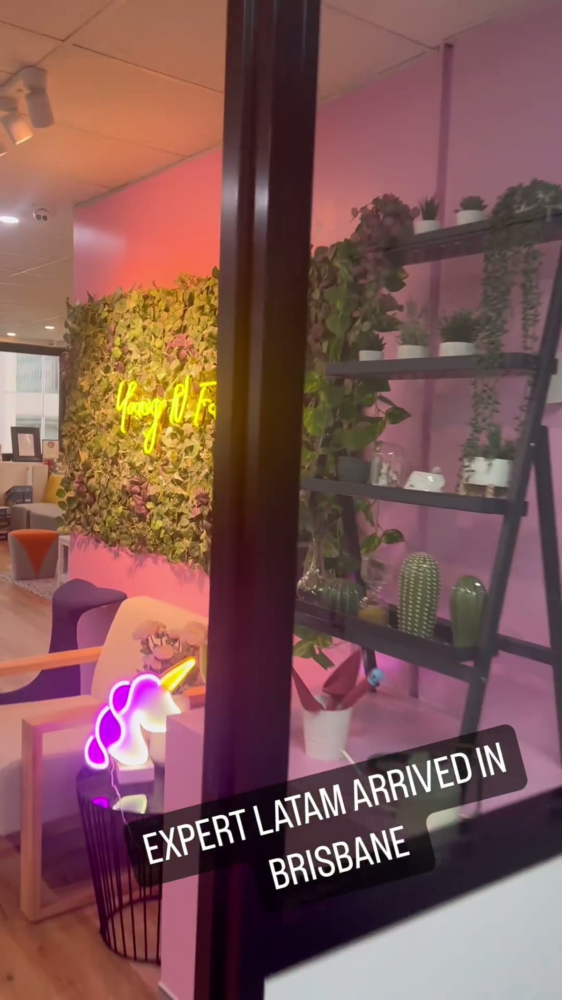
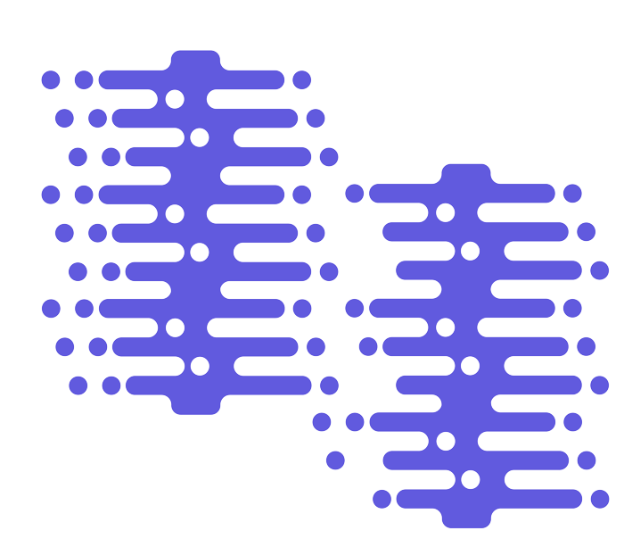

Estrutura · Educação · Vistos
Expert Education & Visa Services
A agência de educação internacional por trás do Austrália Sem Fronteiras.
Mais de 23 anos ajudando brasileiros a estudar, trabalhar e viver na Austrália — vistos, escolas, universidades e suporte especializado do início ao fim da jornada.
Marcelo Lusardo é sócio fundador investidor.
*Expert Education & Visa Services, fundada em 2003.
Marcelo é sócio fundador investidor
Além de criar o Austrália Sem Fronteiras, Marcelo é sócio fundador investidor da Expert Education & Visa Services — não é só um parceiro de marca, é estrutura de verdade por trás da promessa.
É essa estrutura que sustenta a parte prática do ecossistema: agente de imigração, aplicações, escolas e universidades parceiras, renovações de visto e suporte especializado do início ao fim.
Presença nos dois países
Nossas unidades
Estrutura própria na Austrália e no Brasil — não é só uma promessa à distância.


Além de Brisbane, a Expert também está presente em:
- Sydney
- Melbourne
- Adelaide
- São Paulo
- Porto Alegre
- Fortaleza
[Foto de cada unidade entra aqui assim que o Marcelo escolher o material — tem bastante conteúdo no Drive esperando seleção.]
Estrutura pra transformar plano em ação
Quer saber se a Expert pode te ajudar com o seu visto?
Faça seu check-in gratuito e descubra qual caminho pra Austrália faz sentido pro seu momento.
Fazer meu check-in gratuito